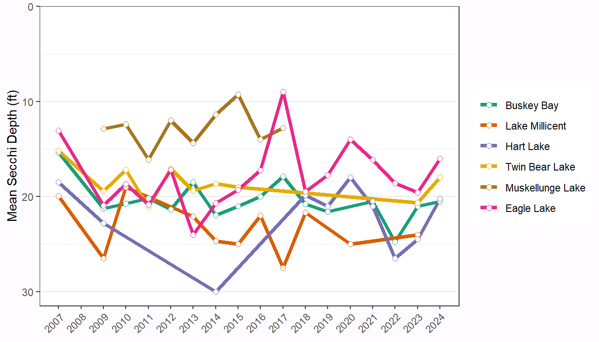
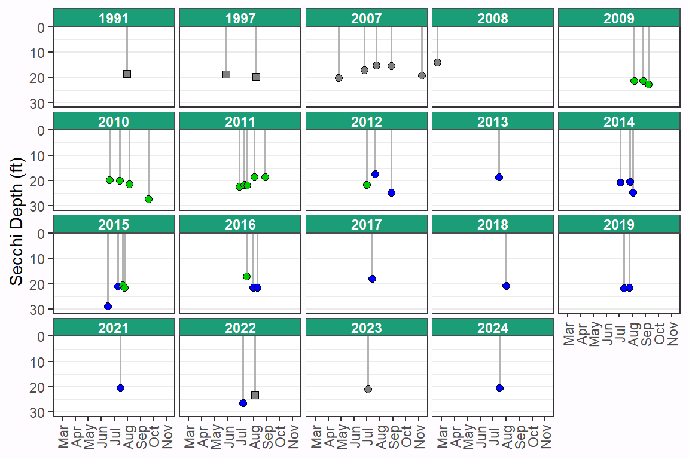
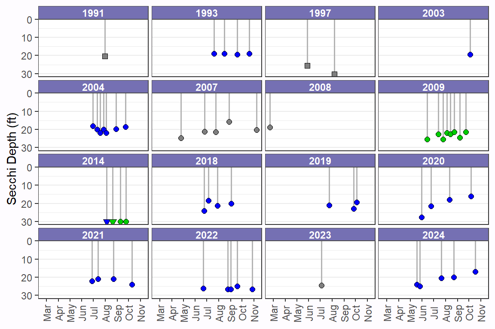
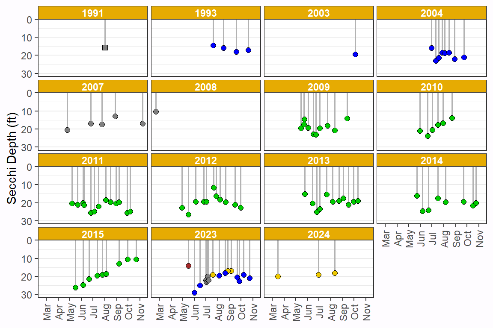
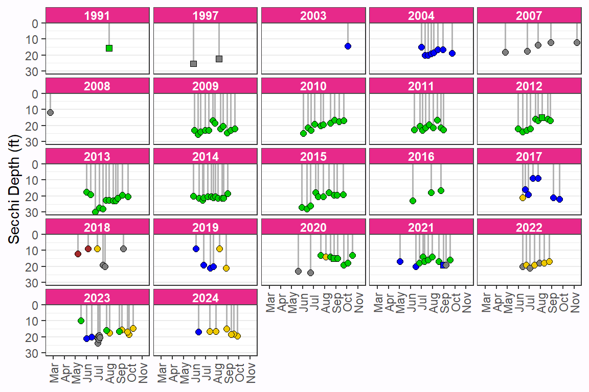
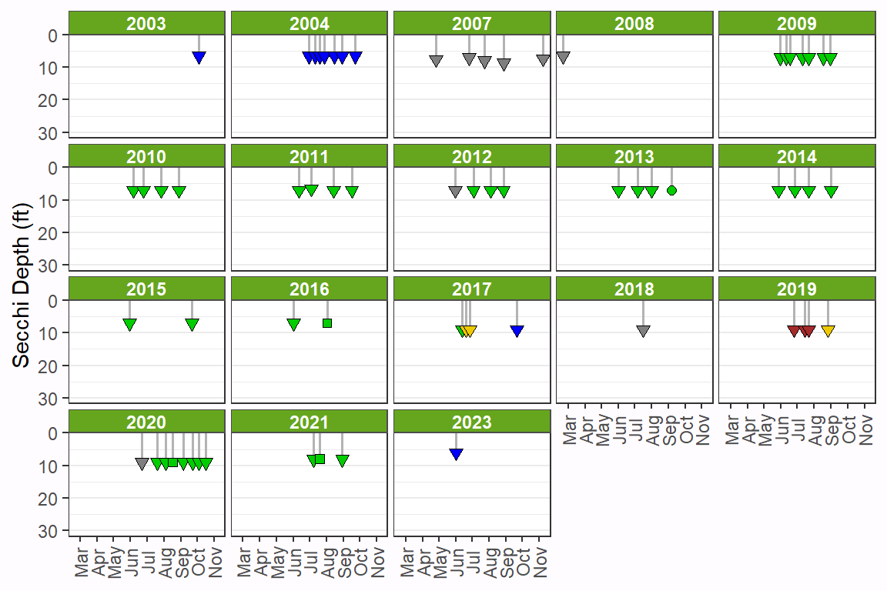

A depiction of Secchi disk depths for lakes in the Pike Chain of Lakes near Iron River, WI.
Pike Chain
Limnology
Vis
Author
Derek H. Ogle
Published
Feb 5, 2023
Modified
Feb 5, 2023
Introduction
The Pike Chain of Lakes near Iron River, WI is a set of seven connected lakes. The Pike Chain is highly developed, has several public access locations, and is popular among anglers, boaters, snowmobilers, etc. year-round. Over the years, especially recently since Eurasian watermilfoil (Figure 1) was introduced, volunteers have recorded various water quality parameters for the Pike Chain of lakes. Below I show the record of Secchi depth recordings that are publicly available through the Wisconsin DNR Citizen Lake Monitoring Network.
Figure 1: Eurasion watermilfoil on Eagle Lake, early summer 2022.
A Secchi disk is an 8-inch disk painted in quadrants with black and white that is lowered into a lake to assess water clarity. The depth at which the disk is no longer visible is called the Secchi depth and is a measure of water transparency; the deeper the depth the more transparent the water. Water transparency can be a surrogate for water quality (more transparent generally means higher water quality) and can be an indicator of human activity on and around the lake. See this and this for quick introductions to Secchi disks.
Summary
Data was inconsistently recorded across lakes.
Muskellunge Lake had the shallowest Secchi depth, whereas Lake Millicent and Hart Lake had the deepest (see Figure 2).
Average Secchi depth varied annually within each lake, with no clear trend of increasing or decreasing in most lakes (see Figure 3),
Lake Comparisons
Lake
Size (acres)
Max. Depth (ft)
Mean Depth (ft)
Buskey Bay
88
51
15
Lake Millicent
183
53
26
Hart Lake
257
54
25
Twin Bear Lake
157
59
23
Muskellunge Lake
43
35
12
Eagle Lake
163
52
14
Flynn Lake
30
9
5
Table 1: Characteristics of each lake in the Pike Chain of Lakes.
Figure 2: Mean Secchi depth for all July to August observations across all years by lake. Flynn Lake not shown as the Secchi disk usually hit bottom before disappearing.

Figure 3: Mean Secchi depth for all July to August observations by year and by lake. Flynn Lake not shown as the Secchi disk usually hit bottom before disappearing.
Individual Lakes

Figure 4: Secchi depths for Buskey Bay. Color of point represents observed color of water (gray is missing data) and a downward triangle means the Secchi disk hit the bottom before disappearing (a square means that it was not recorded if the bottom was hit).
Figure 5: Secchi depths for Lake Millicent. Color of point represents observed color of water (gray is missing data) and a downward triangle means the Secchi disk hit the bottom before disappearing (a square means that it was not recorded if the bottom was hit).

Figure 6: Secchi depths for Hart Lake. Color of point represents observed color of water (gray is missing data) and a downward triangle means the Secchi disk hit the bottom before disappearing (a square means that it was not recorded if the bottom was hit).

Figure 7: Secchi depths for Twin Bear Lake. Color of point represents observed color of water (gray is missing data) and a downward triangle means the Secchi disk hit the bottom before disappearing (a square means that it was not recorded if the bottom was hit).
Figure 8: Secchi depths for Muskellunge Lake. Color of point represents observed color of water (gray is missing data) and a downward triangle means the Secchi disk hit the bottom before disappearing (a square means that it was not recorded if the bottom was hit).

Figure 9: Secchi depths for Eagle Lake. Color of point represents observed color of water (gray is missing data) and a downward triangle means the Secchi disk hit the bottom before disappearing (a square means that it was not recorded if the bottom was hit).

Figure 10: Secchi depths for Flynn Lake. Color of point represents observed color of water (gray is missing data) and a downward triangle means the Secchi disk hit the bottom before disappearing (a square means that it was not recorded if the bottom was hit).